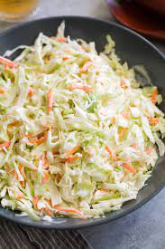

Coleslaw

Description
coleslaw is an amazing dish that can be eaten on its own, used as a side dish or can be used to garnish some dishes eg jollof rice
Ingredients
- cabbage
- carrot
- cucumber
- mayonaise
Steps
- wash the vegetables
- grate them with a grater
- mix them thoroughly together
- add the mayonaise
- surprise! our coleslaw is ready in less than a jiffy!